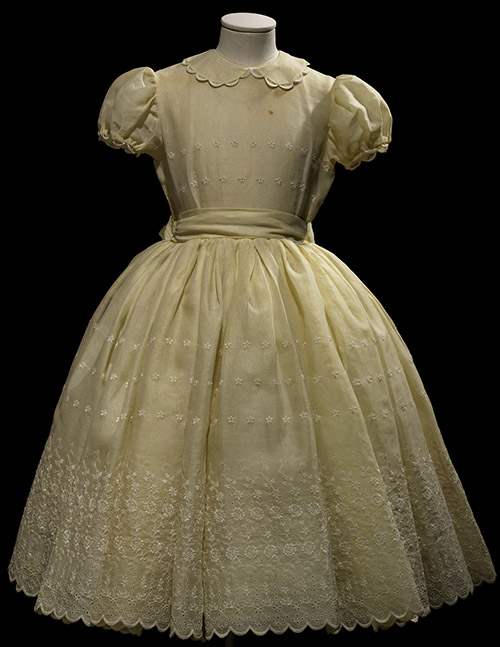

Child’s formal dress
Spring 1957
- line: Christian Dior Original in Canada, Exclusive to Holt Renfrew & Co. Ltd., Spring 1957, made to order
- occasion: Late day - evening
- atelier: Holt Renfrew Montreal
- textile: Cotton organdy, cotton embroidery

Grand Mariage
Autumn-Winter 1956
- line: The Epee Look Christian Dior-New York
- occasion: Wedding
- textile: Vélours de coup satin
2013.68.11, .14.1-2, .68.15
Gifts from the Estate of Molly Roebuck
* Photo Laziz Hamani
 *
*
Young girl’s formal dress
Spring 1957
- line: Christian Dior Original in Canada, Exclusive to Holt Renfrew & Co. Ltd., Spring 1957, made to order
- occasion: Late day - evening
- atelier: Holt Renfrew Montreal
- textile: Silk organdy, cotton embroidery